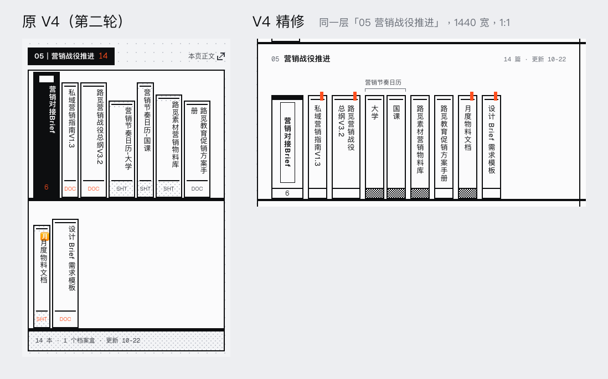

设计稿 · 2026-10-23 · 第三轮 · 只做稿，不改应用
飞书知识库页 · V4 书架精修
按你选的 V4 书架往下精修，解决「竖排没对齐」「堆得太满」两件事，顺带把细节过了一遍。数据仍是正式服务 10-23 15:26 的只读快照（kb-data.json）；配色、字体、网点、像素图标照仓库原样，动效全部按帧，没有 CSS transition。页面能直接试：悬停书脊、点档案盒、拖书换层、搜索（只改页面里的副本，不连接口）。

你圈出来的那一层：左边是原 V4，右边是精修版（同为 1440 宽，1:1）。
1竖排对齐
- 书一律等高，书名从同一条线起排，书头线、书尾线在一层里连成两条横线。
- 按实测字宽断列：一列放得下就一列；放不下才分两三列，各列尽量等长，不留单字孤列（原来的「册」「表」）。
- 断在词边界上：优先在「-」「丨」、空格处断开并去掉符号，其次是括号前后、中英文交界、词与词之间（浏览器自带中文分词，再补「路觅教育」「工作流」「全链路」等不该拆的词）。例：路觅教育 / 新员工入职指南、2026 / 路觅教育品牌手册、用户链路重塑方法论 / V1.32。
- 数字和英文按竖排习惯：7月、T1、AI 横排压成一格；2025、FAQ 逐字竖立、和汉字同宽；Brief、V1.3 侧转。
- 彩色 emoji（🈷️ ✅ ☑️）和「.pdf」不上书脊，悬停卡里看全名。
2更干净
- 一整个书柜代替 12 个各自带框的小书架：外框、柜顶、层板、中间一块隔板，左右两格同一层的层板对齐。
- 去掉每本书底部的类型字、每层的网点读数条、黑色页签；层名改成一行普通文字，改名和本页正文只在悬停这一层时出现。
- 类型只看书尾：白 = 文档，网点 = 表格，墨 = 多维表，虚线框 = 文件；柜顶有一行图例。
- 橙色只剩几处：待上架篇数、近 3 天更新的书签、打开的盒盖、拖放落点。
- 待归类改叫「待上架」，书横放成摞，就摆在柜顶上，和书柜是一个整体。
3细节
- 系列书靠在一起：04 的四本 T1、10 的三本标准模版、05 的营销节奏日历、99 的两份策略文档，上方一道细括号写系列名，书脊只写区分的那半截。
- 档案盒有盒盖、标签窗，盒尾写篇数；点开变成敞口盒，盖子变橙，书逐帧一本本取出。
- 悬停书脊两帧抽出，弹出一张卡：全名、类型、更新、摘要、所在位置、打开原文；键盘聚焦也一样。
- 拖放：拿起的书留下灰色虚线空位，落点出现橙色虚线的「放这里」；放好后层名反色闪两下，书标「同步中」。
- 搜索：没命中的层收成一行，命中的层顶上来，含命中的盒子自动打开，没命中的书退成灰线（不用透明度）。
前几轮：第二轮 V1 文件夹墙 · V4 书架（原） · V5 1-bit 桌面；第一轮 V2 目录 + 阅读台 · V3 分组格 + 总表